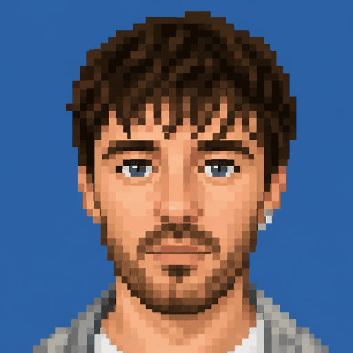
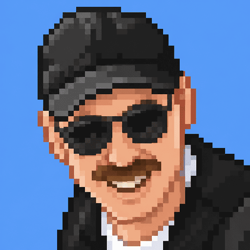
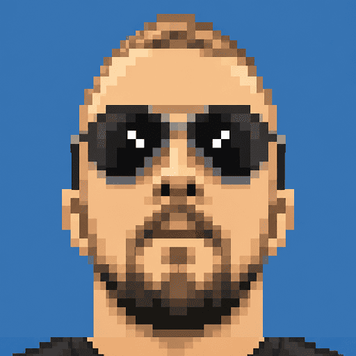
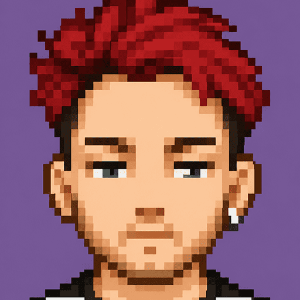
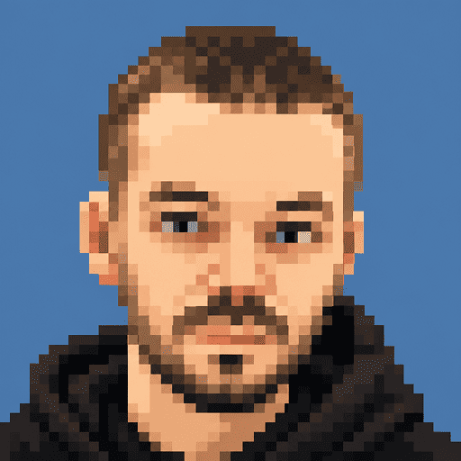

How I lead
Besides designing, I run the people side of the design team: hiring, growth, reviews, and the link between design and product goals. This page shows how I lead, with examples from the cases on this site.
I can confidently say that Vladimir is one of the strongest Design Leads I have worked with.
What sets him apart is his ability to balance leadership, product thinking, and design craft. He's leading the design team and helping define where the product is going. He's always involved in product discussions, helping shape ideas and guiding the team toward better solutions.
He's also very good at bringing cross-functional teams and stakeholders together. Several times I've seen ideas go from early discussions to shipped features because he knew how to get people aligned and keep everyone moving in the same direction.
Vladimir makes both teams he leads and the products they build better.

- ◆ Role
- Lead Product Designer at Tinkoff. Team of 4 product designers, 12+ product areas of Touch
- ◆ Hiring
- Hired 2 designers to my team. Run the whiteboard interview for designers across the company; earlier ran the first-round interview after HR screening. 87 interviews in total: 49 whiteboard, 38 first-round
- ◆ Growth
- Grew 3 designers: Lex and Rita from Middle to Senior, Andrey from Junior to Middle
- ◆ Strategy
- Design goals tied to product metrics: Time to Market, Time on Task, CSI
- ◆ Review
- Regular design reviews in every product area I lead
- ◆ Tools
- Figma, FigJam, Jira, Confluence, Notion, OKRs
Team
Four designers work with me now, four more worked with me before. Three of them grew a level while working with me; their growth is highlighted.
Now in my team
-
Rita
Middle → Senior
-

Serge
Senior
-

Kos
Senior
-

Ian
Middle
Worked with me before
-

Lex
Middle → Senior
-
Andrey
Junior → Middle
-
Alex
Senior
-

Nik
Middle
Strategy
At Tinkoff I lead design across 12+ product areas of Touch, the platform for customer marketing: campaign orchestration, audiences, content, acquisition and analytics.
I turn business goals into a design direction the team can act on: what to build, why, and how we will measure it. Design goals are tied to product metrics: Time to Market, Time on Task and CSI. In campaign creation, that meant launch time going from 30–70 days to between one day and a week.
Hiring
I hired two designers to my team: I defined the role, reviewed portfolios, ran the interviews and made the decision.
I also hire designers for the company. I run the whiteboard section of the design interview; before that I ran the first-round interview after HR screening. In both I look for craft, judgment under uncertainty, and how a candidate explains their own trade-offs.
My interviews at Tinkoff
Candidates I interviewed for the whole company, not only my team
- Candidates I interviewed 87
- First-round interviews 38
- Whiteboard sections 49
For design teams across Tinkoff. In my own team: 2 designers hired
Growing designers
I grew three designers: Lex and Rita from Middle to Senior, Andrey from Junior to Middle. The approach is the same each time.
- Agree on what the next level means in our product: craft, autonomy, work with stakeholders.
- Give real ownership of a product area early, and stay in reviews as a safety net instead of making every call.
- Use critique to build judgment, with specific feedback after each review instead of once a year.
In campaign creation, each designer owned a functional area: Rita the campaign entity and scenarios, Serge audiences and A/B tests, Alex content and creatives.
People management
I run 1:1s, balance workload across parallel product areas, and resolve conflicts between priorities, stakeholders and team members.
When product and design disagree on scope, or the team disagrees on direction, I look for the reason behind the disagreement and solve that, so the work doesn't stall.
Design review
I run design reviews in every product area I lead and stay hands-on: I join critique and draw part of the prototypes myself. Reviews keep 12+ areas consistent, help designers grow, and show new hires the team's bar.
Reviews with stakeholders follow the same rule. When the architecture review of content storage stalled on templates and analytics, I proposed listing every disputed point and checking each one with users.